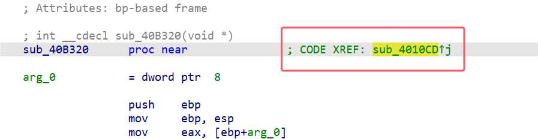
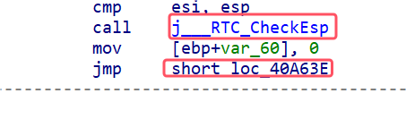

IDA使用入门
常用快捷键
任何界面：
N：重命名，可重命名函数，变量等；
R：字符切换，可将数据在int型与char型之间切换；
H：进制切换，可将数据在十进制与十六进制之间切换；
Y：数据类型切换，可更改函数返回类型，数据类型等；
X：交叉引用，可查看函数、变量甚至地址的交叉引用；
Tab：在反汇编界面与汇编界面快速切换；
G：前往地址处，可跳转至目标地址；
F5：切换至反汇编界面，更新反汇编；
Ctrl+Z：撤销操作；
Ctrl+E：显示程序入口点；
Shift+E：提取选中块的字节码；
Shift+F1：打开本地类型定义界面
Shift+F2：打开脚本执行界面；
Shift+F12：打开字符串表界面；
Esc：跳转至上次跳转或退至上一界面；
/：添加注释；
IDA View界面：
Space（空格）：在IDA-Veiw界面（汇编界面）切换流程图与纯文本模式；
U：取消定义，将光标位置的指令等取消定义，回归到数据状态；
C：将光标位置的数据定义为代码，IDA将自动分析；
P：编辑为函数，将从光标位置开始的代码识别为函数，IDA将自动分析；
D：切换数据字宽；
Structures界面：
Insert：新建结构体；
Delete：删除结构体；
D：添加结构体成员+更改结构体成员子宽；
常用功能
更改基地址：
可更改程序基地址，更改后IDA自动分析；
Patch

或在IDA View界面右键空白处：
点击OK应用更改
显示字节码
其他技巧
- IDA View界面的这种绿色及红色标注可以双击跳转至交叉引用处； 
- 函数、变量、标志都可以双击跳转： 
- IDA中的红色一般都是指分析失败/错误的地方（往往也意味混淆的出现）：
- Function name栏和String栏都是可以Ctr+F打开查找的：
IDA调试
调试前准备
主要介绍Windows物理机调试方法，Linux物理机将Windows和Linux名词替换后同理：
当使用Windows物理机调试exe文件时，直接使用Local Windows debugger即可调试：
当使用Windows物理机调试exe文件时，需要使用Linux虚拟机及Remote Linux debugger远程调试：
将IDA文件夹下/IDA Pro/dbgsrv/内对应版本的调试文件复制到虚拟机内一份，并运行
回到IDA中摁F9会弹出：
在Hostname处填你的Linux虚拟机地址，其他默认内容一般无需改变，
可通过ifconfig查看Linux虚拟机IP：
然后点击OK即可开始调试。
注意使用远程调试时，输入和回显都在虚拟机命令行中。
调试技巧
常用摁键：
F7：步过，一行一行汇编过，遇到分支和函数会进入；
F8：步跳，一行一行汇编过，遇到分支和函数会完成分支或函数内容并跳至下一行；
F9：启动调试或运行至断点处；
F2：设置断点；
页面分步：
其中，寄存器、栈、内存、标志位和IDA View界面都可以更改数据；
栈、内存、IDA View界面都可以通过G快捷键跳转至目标位置；
鼠标悬停至寄存器、变量或函数位置可预览其内容和地址：

在此处终止调试：